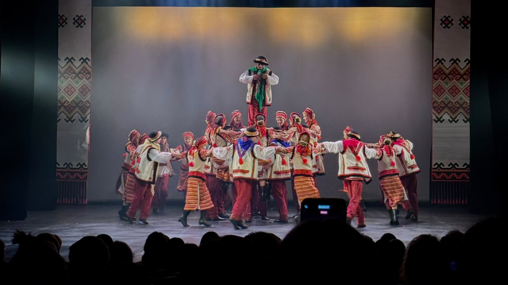
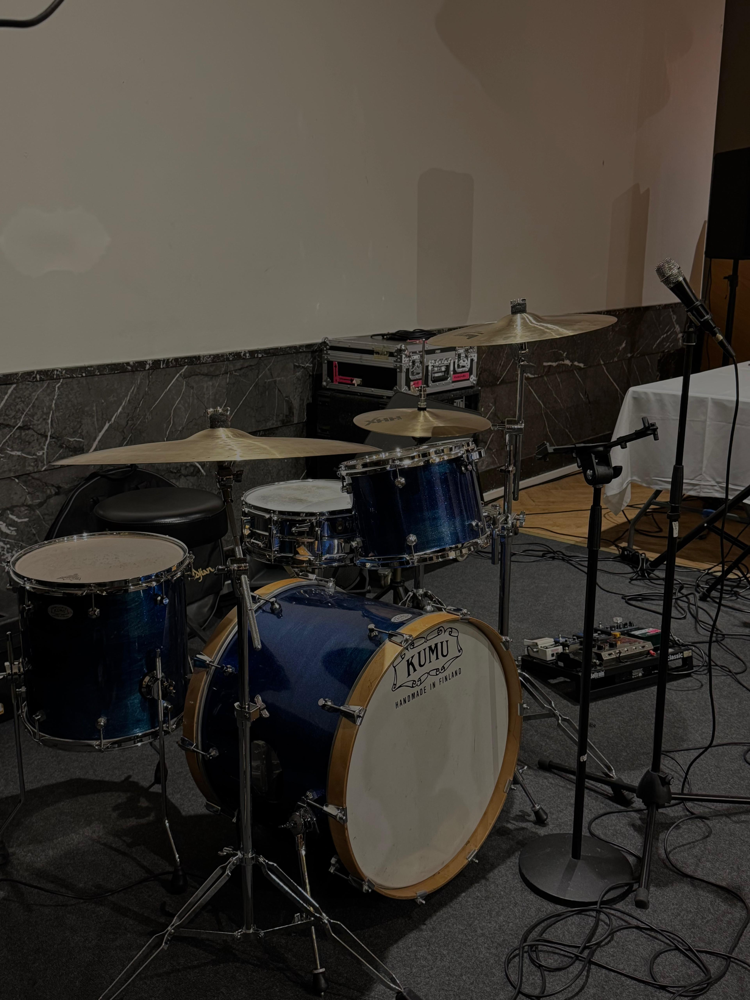

A dance kvartirnik is a modern twist on the traditional Russian kvartirnik—small, home‑based gatherings rooted in the 1970s–80s apartment concerts that offered artists a safe space for creativity and connection. Today, it’s an intimate dance event held in a cozy apartment or loft, with a warm, home-like atmosphere and a curated guest list. The evening usually opens with short live performances, then shifts into an open dance floor with a DJ or carefully selected music. Guests are invited to move freely, connect, and enjoy a relaxed, creative environment where the line between performer and audience disappears.

